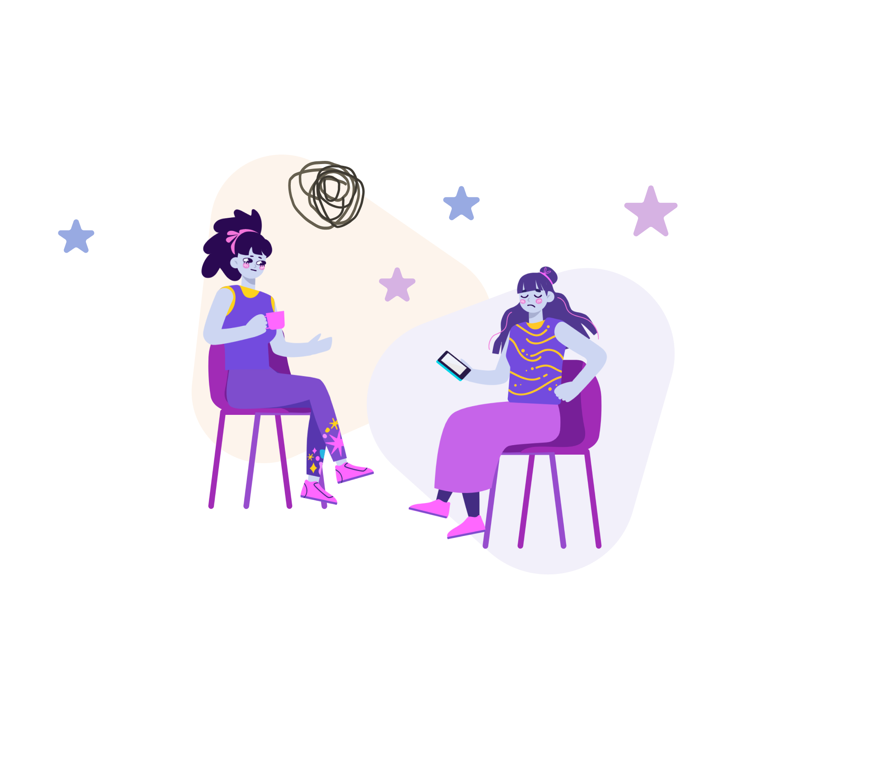

В ТЯЖЕЛЫЕ ВРЕМЕНА ОСТРОЕ ЧУВСТВО ТРЕВОГИ ЗНАКОМО КАЖДОМУ ИЗ НАС
В ТРЕВОГЕ МЫ НЕ ЧУВСТВУЕМ СЕБЯ В БЕЗОПАСНОСТИ, ОЩУЩАЕМ СЕБЯ ОДИНОКО И ПОТЕРЯННО. КАЖЕТСЯ, ЧТО НИЧЕГО НЕЛЬЗЯ С ЭТИМ СДЕЛАТЬ.
ИЛИ МОЖНО?
Нам хорошо знакома такая проблема, поэтому наша группа единомышленников создала сайт, посвященный практикам и борьбе с тревожностью. вы не одиноки, и мы покажем, что тревогу можно победить!
мы собрали множество практик и полезных материалов, которые помогают нам справляться с этим ужасным состоянием. и наша команда верит, что вам тоже это обязательно поможет! Однако, эти практики не заменят помощь специалиста, а лишь дополняют лечение. поэтому, при постоянных симптомах тревоги, обязательно обратитесь к врачу. телефоны и контакты организаций вы можете найти на нашем сайте в разделе поддержка
Что мы знаем о тревоге?
тревога — это первая реакция организма на стресс. при ее появлении у человека, попавшего в стрессовую ситуацию, немного поднимается давление, сокращаются мышцы, учащаются сердцебиение и дыхание. в эволюционном процессе человека тревога, как эмоция, играла важную полезную роль, необходимую для выживания. Благодаря ей люди были бдительными, осторожными, учились просчитывать последствия действий, ведь зачастую ценой ошибки была жизнь. Поэтому, тревогу можно считать полезной реакцией.
но есть один нюанс – природой задумано, что при исчезновении стрессовой ситуации симптомы тревоги так же должны исчезать. если этого не происходит, тревогу уже нельзя считать нормой. как и в тех случаях, когда она не связана с какими-то событиями. если такое состояние затягивается на месяц или больше, то оно наносит вред здоровью. при длительной тревоге, как и при кратковременной, организм мобилизуется. Но постоянно работать в экстренном режиме он не может, поэтому дает сбои.
в современном мире за «работу» тревоги нам часто приходится платить слишком высокую цену. мы расплачиваемся эмоциональной нестабильностью, перерасходом энергии, нарушением сна и аппетита, снижением иммунитета, потерей контактов с близкими, агрессией, а также реальными болезнями.
Как вам могут помочь профессионалы?
Психотерапия
Когда не получается справиться с тревогой самостоятельно, стоит обратиться за помощью к профессионалу
Рецептурные средства с психиатром
помните, что только врач может выписать рецептурные средства
не занимайтесь самолечением — это может быть опасно!
Телефоны доверия
Бесплатные телефоны доверия психологической помощи
8 (800) 200-01-22 - Детский телефон доверия
8 (800) 333-44-34 - Бесплатная кризисная линия доверия
Наша команда
Света
Алиса
Ира
Катя
Бэлла
Мы — команда начинающих веб-разработчиков, которым так же тревожно как и вам. Мы собрались вместе и решили сделать этот гайд, чтобы вам было проще ориентироваться в океане информации в интернете. Надеемся, что сайт будет вам полезен. Обнимаем :)